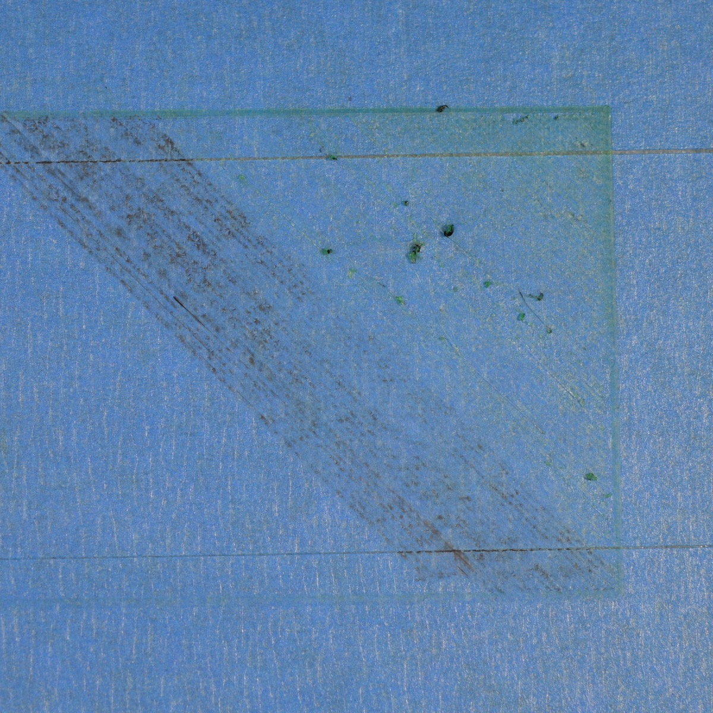
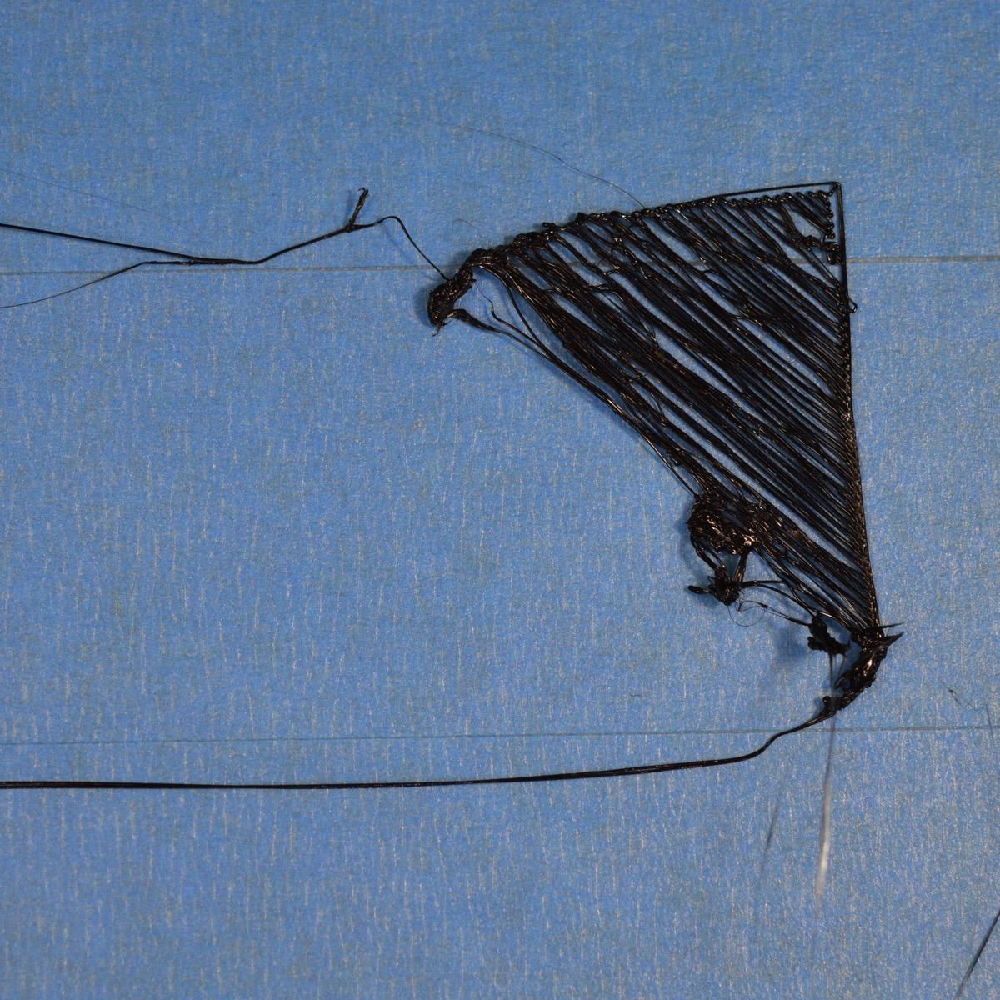
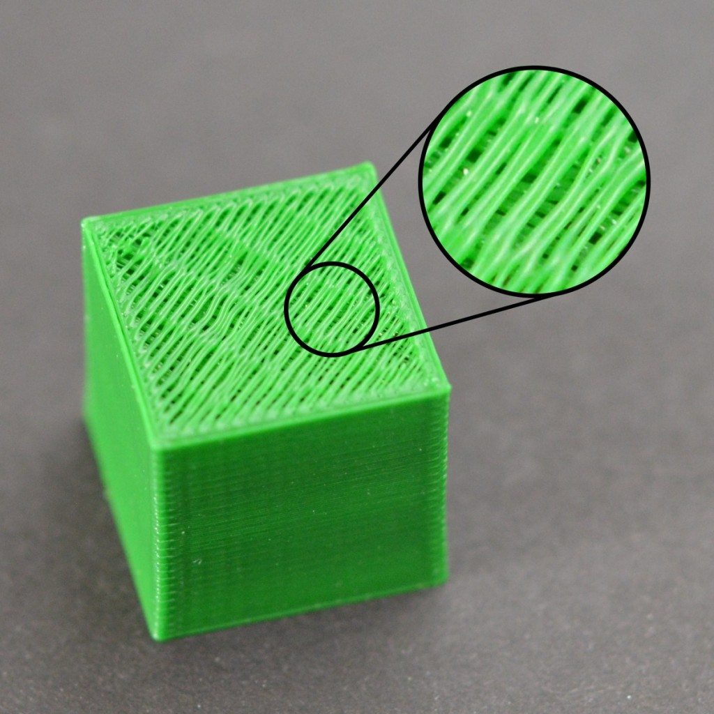

Sin extrusion la primer capa
No se purgo el extrusor al inicio Nozzle rozando la cama El filamento esta 'robado' El nozzle está tapado
No se pega a la cama
Plataforma no nivelada Nozzle demaciado lejos de la cama Primera capa demaciádo rapida Problemas con la temperatura o fan de capa encendido La superficie de la cama de impresion Cuando todo falle: Brims y Rafts
Extrusion insuficiente

Diametro seteado incorrecto Incrementar el extrusion multiplier Clogged/tapado
Sobre extrusion
Diametro seteado incorrecto Disminuir el extrusion multiplier

Huecos en la capa superior
Capas superiores insuficientes El relleno es demaciado bajo Problemas de poca extrusion
Stringing/Oozing/hilos

Distancia de retraccion Velocidad de retraccion Temperatura alta Grandes movimientos en espacio abierto Velocidad de 'viaje'
Sobrecalentamiento
Enfriamiento insuficiente Imprimiendo a muy alta temperatura Imprimiendo demaciado rapido Reduccion de velocidad en capas pequeñas Cuando todo falle: intentar imprimir varias piezas simultáneamente
Layer shifting

Cabezal demaciada velocidad pieza/overhangs complicados Problemas mecanicos y/o electricos
Se separan las capas / Splitting
Altura de capa demaciado alta. Temperatura demaciado baja. problemas con el ambiente con determinados materiales.
Barral/nozzle desajustados

Ajustar apropiadamente nozzle contra el Barral Sin ajustar el nozzle contra el block
Filamento comido
Velocidad de retracción muy alta. Temperatura del extrusor muy baja Imprimiendo demaciado rapido Chequear extrusor parcialmente/tapado. Tension del resorte del extrusor.
Extrusor tapado
Empujar manualmente el filamento al extrusor Sacar el filamento, cortar un tramo y reinsertar. Limpiar el nozzle.
Deja de extruir en el medio de la impresion
Sin filamento Filamento ‘robado’ Nozzle tapado Driver del motor sobrecalentado.
Relleno débil
Probar con otros patrones de relleno Bajar la velocidad de infill Incrementar el ancho del trazo del infill
Blobs o sobreextrusion al inicio de la capa

Retraccion y coasting incorrectos Evitar retracciones innecesarias Retracciones en movimiento Elegir el inicio de la ‘costura’
Gaps o agujero entre relleno y perímetro
Insuficiente overlap Imprimiendo demaciado rapido
Curling o bordes deformados
Overheating demaciada temperatura poca refrigeracion / fan de capa
cicatrices en la capa superior
Flowrate elevado Vertical lift (Z-hop)
Agujeros en las esquinas
Perimetros insuficientes Capas superiores insuficientes Relleno insuficiente
Lineas en los costados

extrusion inconsistente Variaciones de temperatura Problemas mecanicos (wobble)
Vibraciones o 'ringing'
Imprimiendo demaciado rapido Aceleraciones del firmware mal seteadas Problemas mecanicos
Agujeros en paredes finas
Ajustar el ancho del trazo del extrusor Opciones de overlap en huecos donde no entra un perimetro.
Cosas pequeñas no se imprimen
Habilitar extrusion de perimetros simples Rediseñar la pieza para tener anchos minimos Cambiar el nozzle por uno mas pequeño cambiar el layer width
Extrusion inconsistente

El filamento se esta trabando o frenando Extrusor tapado alturas de capa muy muy finas Ancho de extrusion incorrecto Mala calidad del filamento Problemas mecanicos del extrusor
Warping

Usar cama caliente o subirle la temperatura. Apagar el fan de capa en las primeras capas Contener la temperatura ambiente de la impresora Brims y Rafts
Mala superficie de soportes

Bajar la altura de capas Subir el infill del soporte Separacion vertical del soporte Separacion horizontal del soporte Usar un segundo extrusor/material.
Precision dimensional
Pata de elefante Under-extrusion o sobreextrusion Steps/mm erróneos
Malos puentes
Verificar seteos de bridge y flujo en bridges Chequear el angulo usado en el infill del bridge Usar algunos soportes en bridges muy largos